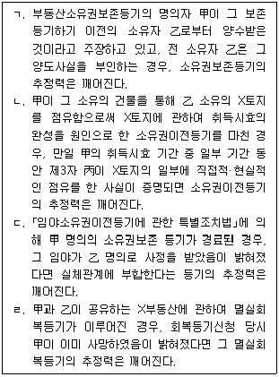
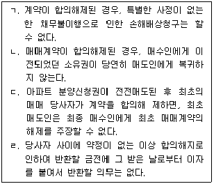

1과목: 민법개론
1. 관습법과 사실인 관습에 관한 설명으로 옳은 것은? (다툼이 있으면 판례에 따름)
2. 성년후견, 한정후견 및 특정후견에 관한 설명으로 옳은 것은?
3. 민법상 법인에 관한 설명으로 옳지 않은 것은? (다툼이 있으면 판례에 따름)
4. 물건에 관한 설명으로 옳지 않은 것은? (다툼이 있으면 판례에 따름)
5. 기간에 관한 설명으로 옳지 않은 것은?
6. 소멸시효에 관한 설명으로 옳지 않은 것은? (다툼이 있으면 판례에 따름)
7. 강행법규 위반의 효과에 관한 설명으로 옳은 것은? (다툼이 있으면 판례에 따름)
8. 비진의 의사표시에 관한 설명으로 옳지 않은 것은? (다툼이 있으면 판례에 따름)
9. 통정허위표시에 관한 설명으로 옳지 않은 것은? (다툼이 있으면 판례에 따름)
10. 착오에 의한 의사표시에 관한 설명으로 옳지 않은 것은? (다툼이 있으면 판례에 따름)
11. 사기 및 강박에 관한 설명으로 옳지 않은 것은? (다툼이 있으면 판례에 따름)
12. 대리에 관한 설명으로 옳지 않은 것은? (다툼이 있으면 판례에 따름)
13. 등기의 추정력에 관한 설명으로 옳은 것을 모두 고른 것은? (다툼이 있으면 판례에 따름)

14. 물권변동에 관한 설명으로 옳지 않은 것은? (다툼이 있으면 판례에 따름)
15. 점유 또는 점유권에 관한 설명으로 옳은 것은? (다툼이 있으면 판례에 따름)
16. 甲은 X토지에 대해 2001. 5. 1.부터 점유를 개시하여 현재까지 20년 이상 점유하고 있고, 그 동안 X토지의 소유자는 변동이 있었다. 점유취득시효에 관한 설명으로 옳지 않은 것은? (각 지문은 독립적이며, 다툼이 있으면 판례에 따름)
17. 甲은 X토지를 소유하고 있다. 소유권에 관한 설명으로 옳은 것은? (각 지문은 독립적이 며, 다툼이 있으면 판례에 따름)
18. 지상권에 관한 설명으로 옳은 것은? (다툼이 있으면 판례에 따름)
19. 전세권에 관한 설명으로 옳은 것은?
20. 민법상 유치권에 관한 설명으로 옳지 않은 것은? (다툼이 있으면 판례에 따름)
21. 질권에 관한 설명으로 옳지 않은 것은?
22. 근저당권에 관한 설명으로 옳지 않은 것은? (다툼이 있으면 판례에 따름)
23. 공동저당권에 관한 설명으로 옳은 것은? (다툼이 있으면 판례에 따름)
24. 동산양도담보에 관한 설명으로 옳지 않은 것은? (다툼이 있으면 판례에 따름)
25. 채권의 목적에 관한 설명으로 옳지 않은 것은? (다툼이 있으면 판례에 따름)
26. 채무불이행에 관한 설명으로 옳은 것은? (다툼이 있으면 판례에 따름)
27. 채권자대위권에 관한 설명으로 옳지 않은 것은? (다툼이 있으면 판례에 따름)
28. 채권자취소권에 관한 설명으로 옳지 않은 것은? (다툼이 있으면 판례에 따름)
29. 다수당사자의 채권관계에 관한 설명으로 옳지 않은 것은? (다툼이 있으면 판례에 따름)
30. 채권양도에 관한 설명으로 옳은 것은? (다툼이 있으면 판례에 따름)
31. 채무자와 인수인 사이의 계약에 의한 면책적 채무인수에 관한 설명으로 옳지 않은 것은? (각 지문은 독립적이며, 다툼이 있으면 판례에 따름)
32. 상계에 관한 설명으로 옳지 않은 것은? (다툼이 있으면 판례에 따름)
33. 동시이행관계에 관한 설명으로 옳지 않은 것은? (다툼이 있으면 판례에 따름)
34. 계약을 합의하여 해제하거나 해지하는 경우에 관한 설명으로 옳은 것을 모두 고른 것은? (다툼이 있으면 판례에 따름)

35. 민법제565조(해약금)의 계약금계약에 기한해제에 관한 설명으로 옳지 않은 것은? (다툼이 있으면 판례에 따름)
36. 매매의 효력에 관한 설명으로 옳은 것은? (다툼이 있으면 판례에 따름)
37. 임대차에 관한 설명으로 옳지 않은 것은? (다툼이 있으면 판례에 따름)
38. 조합에 관한 설명으로 옳지 않은 것은? (다툼이 있으면 판례에 따름)
39. 부당이득에 관한 설명으로 옳은 것은? (다툼이 있으면 판례에 따름)
40. 매매목적물에 관한 근저당권의 피담보채무를 매수인이 인수하는 한편, 그 채무액을 매매대금에서 공제하기로 약정한 경우에 관한 설명으로 옳지 않은 것은? (각 지문은 독립적이며, 다툼이 있으면 판례에 따름)